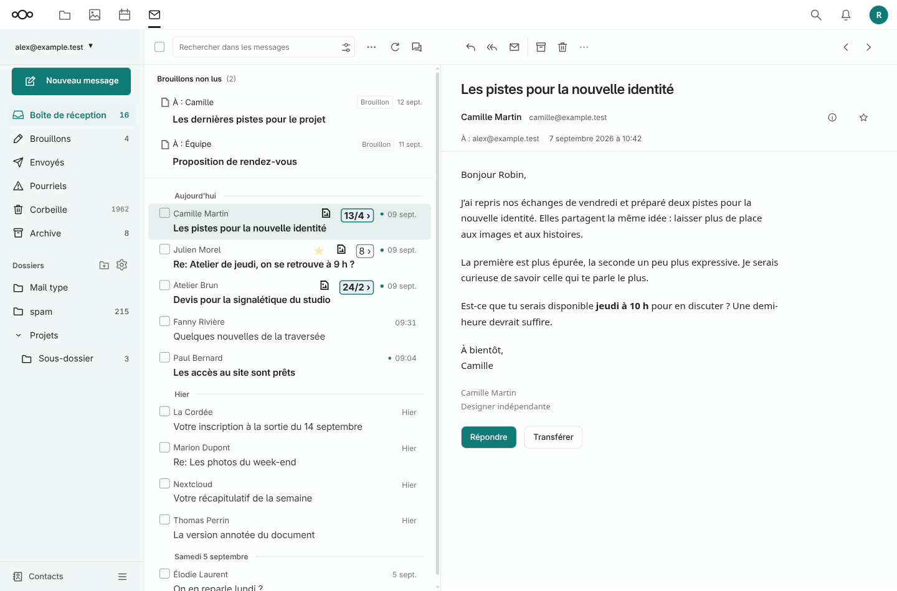
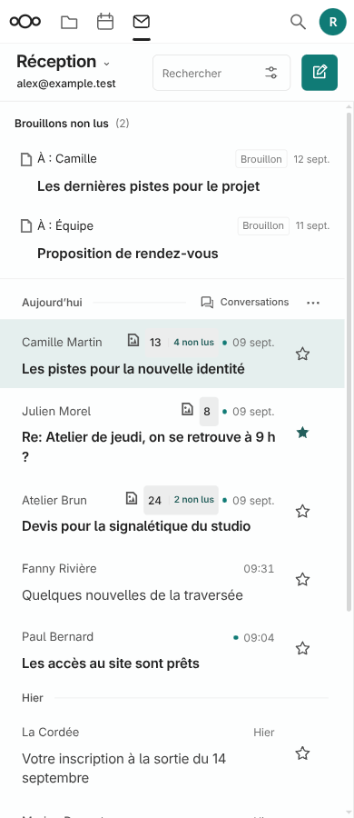
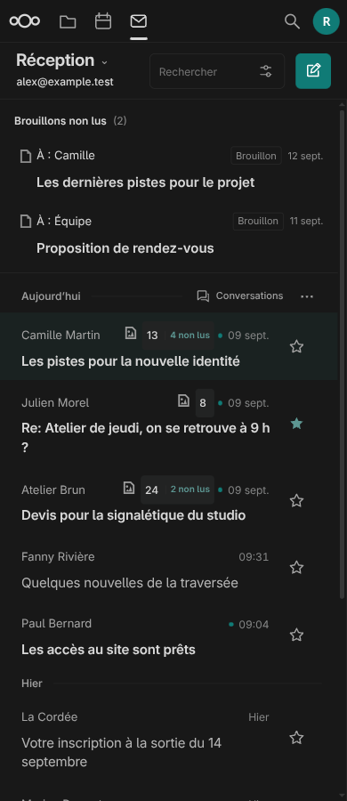
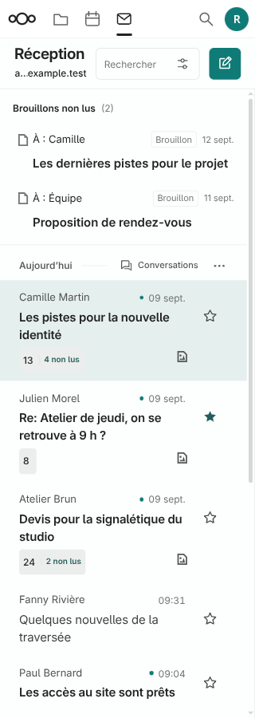

Version 1.7.1 installée le 12 septembre 2026. Compilation réelle et 33 fichiers vérifiés.
Évolution
Diagnostic : le compteur 13/4 gardait une bordure appuyée et une hiérarchie confuse. L’étoile cumulait deux atténuations et pouvait être masquée au repos.
Compteur : total sobre, libellé explicite « 4 non lus », infobulle décrivant la conversation. Le texte natif reste intact et se met à jour normalement.
Suivi : étoile toujours visible, contour contrasté ou forme pleine pour un message suivi. Alignement à droite en vue partagée/mobile ; cible tactile de 44 px.
Petit écran : jusqu’à 360 px, le compteur descend sous l’objet pour laisser le nom de l’expéditeur lisible. La priorité des règles natives a été corrigée et vérifiée.
Interactions : souris, Entrée et Espace réutilisent les commandes natives. Les attributs d’origine sont restaurés en quittant Pied Web.
Livraison : sauvegarde de la 1.7.0 hors du répertoire web, contrôle des empreintes, installation et compilation sur le serveur.
Avant correction, données fictives

Ordinateur : suivi distinct, compteurs secondaires, objets en priorité.

390 px : étoiles alignées et accessibles.

Mode sombre natif.

320 px : le nom de l’expéditeur garde sa place.
Validation et restauration
15 scénarios de métadonnées, 25 régressions des brouillons non lus, 5 diagnostics d’installation et contrôles de syntaxe/génération réussis. Le répartiteur de clic natif est réutilisé avec transport et navigation simulés ; aucun mail réel ni session navigateur authentifiée. La compilation et les fichiers installés ont été vérifiés via SSH.